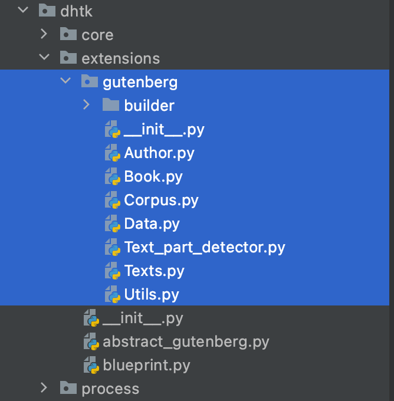

Developer’s Guide¶
DHTK is an open-source team effort. Contributions are essential to our survival and growth. We are thankful for any contribution and are happy to welcome you to the DHTK community!
You can contribute to DHTK in many ways:
Sending us feedback with suggestions or let us know of any issue you run into while using DHTK.
Add or modify minor functionalities to DHTK
Contribute to the development of new extensions
Feedback and issues¶
As DHTK grows, we aim to make it more efficient, simpler and contain more functionalities relevant to the Digital Humanities’ community. Even if you do not have the computational expertise to program in Python, you can contribute as part of the DHTK community by letting us know how to improve DHTK to best fit your research needs.
If you have any question, suggestion or feedback please write to us at davide.picca@unil.ch
All suggestions and feedback are welcomed!
Minor changes¶
If you think DHTK is missing some simple functionality or could be made simpler and easier in some way, and you want to contribute by helping us implement those changes, thanks you! However, before you do so, please write to us at davide.picca@unil.ch to let us know!
Adding or modifying functionalities to existing DHTK module can be easily done by directly modifying the existing source code. As a collective effort, we remain an open to everyone’s contributions. Please visit our GitHub page, containing all the source code and documentation required to build DHTK. There, you also will find instructions on how to clone the DHTK repository, create your own branch and how to submit your changes for review as a pull request. You can add or modify any function, class or method you deem required to improve DHTK usability and submit a pull request at any point. Your request will be discussed and reviewed and soon as possibly using the normal Github interface.
New extensions¶
If you would like to integrate a new dataset to DHTK, please write to us at davide.picca@unil.ch to let us know! DHTK modular structure is thought out to simplify integrating new modules, features and datasets. This is done using a unified module wrapper class defined in the extension’s __init__ file. This Module class inherits from the DHTK AbstractExtension class blueprint, which provides most of the common functions required to set up an extension, allowing easy integration of new modules and continuous growth to better suit the community.
DHTK is divided into three parts as described in the documentation page. The three parts are organised in separate directories (core, extensions, processing) for easier identification and navigation during development. Development on new modules is initiated by creating a new folder under the extension directory. This guarantees that the new extension functions as a self contained module, independent of the core DHTK modules.
RDF Dataset¶
If the new extension module uses a new pre-processed dataset, the finalised RDF file should be made available to download so it can be added to the local Fuseki endpoint. These files can be stored in any remote location, as long as freely accessible, though we would recommend using Zenodo.
For reproducibility and transparency, the full pipeline used to produce the provided RDF file (including clear instructions on how to use it) should also be made available under the “builder directory” of the module (e.g. dhtk/extensions/gutenberg/builder/)
Integrating new modules¶
DHTK core modules are responsible to locate and load any module within the extension directory. Due to the modular architecture of DHTK, these extensions can be easily developed as self-sufficient Python modules, which are integrated into the DHTK framework in three steps:
Create a module specific directory inside the extensions directory and move the module scripts to it.
Add the class named Module, inheriting from the AbstractExtension blueprint, to the module’s __init__ file.
Complete the Module class by defining at least the required attributes and methods: name, url, .get() and .save().
The DHTK AbstractExtension abstract class contains most of the required methods to prepare a module for use. The new Module class is essentially a wrapper around a DHTK extension, defining the attributes name and url (name of the extension and location of the RDF data file to use on with the local SPARQL endpoint), and the methods to query and save the results. Any additional method that improves the Module class can be freely included.
Gutenberg example
1) Create a module specific directory: The gutenberg subdirectory was created on the dhtk’s extension directory. All the files from the previously tested independent module are moved to this folder.
{kind=link}
2) Add the class named Module to the __init__ file
"""Gutenberg extension integration example"""
class Module(AbstractExtension):
"""Gutenberg Triplestore Class"""
3.1) Defining attributes
The general attributes name and url can be defined withing the class’ __init__ method or on the class scope (outside methods).
"""Gutenberg Triplestore Class"""
# Example in class scope
name = "gutenberg"
url = "https://sandbox.zenodo.org/record/709580/files/gutenberg_reasoned_final.ttl?download=1"
def __init__(self, settings, client):
super().__init__(settings, client)
# Example in __inin__ method
self.name = "gutenberg"
self.url = "https://sandbox.zenodo.org/record/709580/files/gutenberg_reasoned_final.ttl?download=1"
# Instantiate a Corpus
self._corpus = Corpus(name=f"{self.name.capitalize()} Corpus",
description="Gutenberg Books",
settings=settings)
self._check_endpoint()
# Get the extension
self.wrapper = GutenbergData(sparql_endpoint=self.ENDPOINT, logs=self.LOGS)
More specific attributes are defined to better integrate the gutenberg module: _corpus and wrapper. In this case, _corpus is used store retrieved books while the wrapper attribute is used to reference the GutenbergData “query” object
3.2) Defining .get and .save methods
Two methods are required to be defined. The get(what, name, add) provides a unified wrapper around the possible queries, simplifying the use of new extensions. The save() method stores the retrieved data on disk.
def get(self, what, name="all", add=False):
# Prepare arguments
name = name.strip().lower()
what = what.strip().lower()
if what.startswith("bo"):
# code
elif what.startswith("au"):
# code
elif what.startswith("sh"):
# code
elif what.startswith("su"):
# code
else:
warnings.warn("Not a valid option")
print("Allowed arguments are:\nbook\nauthor\nshelf\nsubject")
return
return response
def save(self):
path = self._corpus.path()
if not path.is_dir():
self.CONFIGS.make_dirs(path)
self._corpus.download_corpus()
with open(path / "corpus.pk", 'wb') as pickled_file:
pickle.dump(self._corpus.to_pandas_dataframe(), pickled_file, protocol=pickle.HIGHEST_PROTOCOL)
pickled_file.close()
self.close()
3.3) Defining additional methods
Gutenberg’s Module class contains two extra methods. The suggested welcome() method automatically provides the user with the dataset statistics. This method is automatically called when a module is loaded, and can be used to provide the user with any (or no) information.
self.CONFIGS.make_dirs(path)
self._corpus.download_corpus()
with open(path / "corpus.pk", 'wb') as pickled_file:
pickle.dump(self._corpus.to_pandas_dataframe(), pickled_file, protocol=pickle.HIGHEST_PROTOCOL)
pickled_file.close()
self.close()
def welcome(self):
while True:
try:
stats = self.wrapper.statistics()
break
except RemoteDisconnected:
pass
timestamp = self.CONFIGS.modules.get('gutenberg', None)
if timestamp is None:
print(f"\nDHTK Gutenberg statistics:{stats}")
else:
timestamp = timestamp.strftime("%d %b %y")
print(f"\nDHTK Gutenberg statistics:\nLast update: {timestamp}{stats}")
The corpus method is not defined in parent AbstractExtension class, but it provides a simpler way to modify a corpus’ settings and retrieve its representation, being a convenient intermediate method to search for book and author information.
def corpus(self, name=None, description=None):
if name is not None:
self._corpus.name(name)
if description is not None:
self._corpus.description(description)
return self._corpus
See also